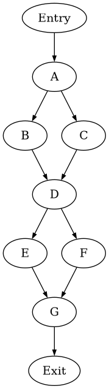
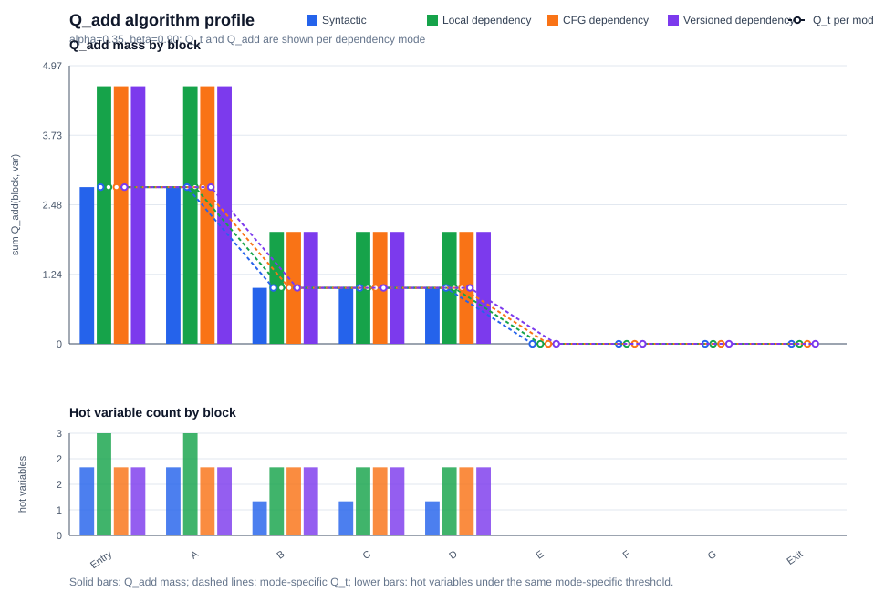
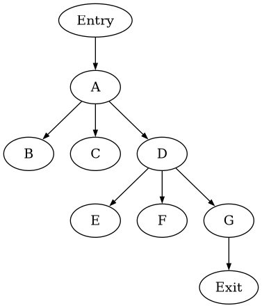
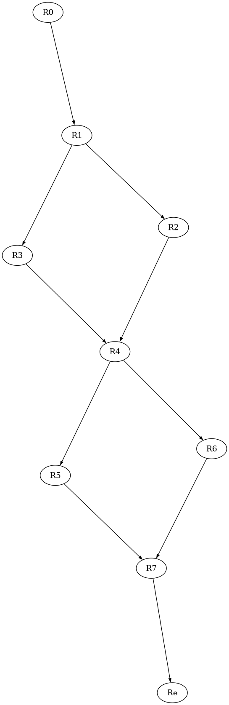
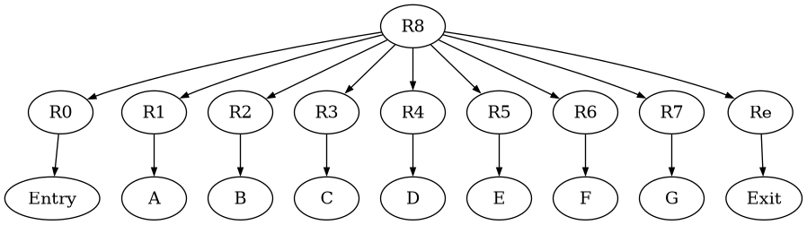

Block A 3 lines
param x param y if True x < # 0goto Lneg
Pipeline report
Generated from the current MIR input and analysis stages.

Tracederivation steps
| block | branch | true edge | false edge | path prefix | status |
|---|---|---|---|---|---|
| A | ifTrue x < #0 goto C | A → C | A → B | true | syntactic; no SMT feasibility check |
| D | ifTrue t > #0 goto F | D → F | D → E | ¬(x < #0) x < #0 |
syntactic; no SMT feasibility check |
Syntactic branch variables
| block | Qt | hot variables | Qadd(block, var) | status | oracle Qadd | L1 Δ |
|---|---|---|---|---|---|---|
| Entry | 2.80 | t, x | t:1.80, x:1.00 | alpha=0.35, beta=0.90; syntactic C relation | x:2.80, y:1.80 | 5.40 |
| A | 2.80 | t, x | t:1.80, x:1.00 | alpha=0.35, beta=0.90; syntactic C relation | x:2.80, y:1.80 | 5.40 |
| B | 1.00 | t | t:1.00 | alpha=0.35, beta=0.90; syntactic C relation | x:1.00, y:1.00 | 3.00 |
| C | 1.00 | t | t:1.00 | alpha=0.35, beta=0.90; syntactic C relation | x:1.00, y:1.00 | 3.00 |
| D | 1.00 | t | t:1.00 | alpha=0.35, beta=0.90; syntactic C relation | x:1.00, y:1.00 | 3.00 |
| E | 0 | None | None | alpha=0.35, beta=0.90; syntactic C relation | None | 0.00 |
| F | 0 | None | None | alpha=0.35, beta=0.90; syntactic C relation | None | 0.00 |
| G | 0 | None | None | alpha=0.35, beta=0.90; syntactic C relation | None | 0.00 |
| Exit | 0 | None | None | alpha=0.35, beta=0.90; syntactic C relation | None | 0.00 |
Local dependency variables
| block | Qt | hot variables | Qadd(block, var) | status | oracle Qadd | L1 Δ |
|---|---|---|---|---|---|---|
| Entry | 2.80 | a, x, y | a:1.80, x:1.00, y:1.80 | alpha=0.35, beta=0.90; local dependency C relation | x:2.80, y:1.80 | 3.60 |
| A | 2.80 | a, x, y | a:1.80, x:1.00, y:1.80 | alpha=0.35, beta=0.90; local dependency C relation | x:2.80, y:1.80 | 3.60 |
| B | 1.00 | a, y | a:1.00, y:1.00 | alpha=0.35, beta=0.90; local dependency C relation | x:1.00, y:1.00 | 2.00 |
| C | 1.00 | a, y | a:1.00, y:1.00 | alpha=0.35, beta=0.90; local dependency C relation | x:1.00, y:1.00 | 2.00 |
| D | 1.00 | a, y | a:1.00, y:1.00 | alpha=0.35, beta=0.90; local dependency C relation | x:1.00, y:1.00 | 2.00 |
| E | 0 | None | None | alpha=0.35, beta=0.90; local dependency C relation | None | 0.00 |
| F | 0 | None | None | alpha=0.35, beta=0.90; local dependency C relation | None | 0.00 |
| G | 0 | None | None | alpha=0.35, beta=0.90; local dependency C relation | None | 0.00 |
| Exit | 0 | None | None | alpha=0.35, beta=0.90; local dependency C relation | None | 0.00 |
CFG dependency variables
| block | Qt | hot variables | Qadd(block, var) | status | oracle Qadd | L1 Δ |
|---|---|---|---|---|---|---|
| Entry | 2.80 | x, y | x:2.80, y:1.80 | alpha=0.35, beta=0.90; cfg dependency C relation | x:2.80, y:1.80 | 0.00 |
| A | 2.80 | x, y | x:2.80, y:1.80 | alpha=0.35, beta=0.90; cfg dependency C relation | x:2.80, y:1.80 | 0.00 |
| B | 1.00 | x, y | x:1.00, y:1.00 | alpha=0.35, beta=0.90; cfg dependency C relation | x:1.00, y:1.00 | 0.00 |
| C | 1.00 | x, y | x:1.00, y:1.00 | alpha=0.35, beta=0.90; cfg dependency C relation | x:1.00, y:1.00 | 0.00 |
| D | 1.00 | x, y | x:1.00, y:1.00 | alpha=0.35, beta=0.90; cfg dependency C relation | x:1.00, y:1.00 | 0.00 |
| E | 0 | None | None | alpha=0.35, beta=0.90; cfg dependency C relation | None | 0.00 |
| F | 0 | None | None | alpha=0.35, beta=0.90; cfg dependency C relation | None | 0.00 |
| G | 0 | None | None | alpha=0.35, beta=0.90; cfg dependency C relation | None | 0.00 |
| Exit | 0 | None | None | alpha=0.35, beta=0.90; cfg dependency C relation | None | 0.00 |
Versioned dependency variables
| block | Qt | hot variables | Qadd(block, var) | status |
|---|---|---|---|---|
| Entry | 2.80 | x0, y0 | x0:2.80, y0:1.80 | alpha=0.35, beta=0.90; versioned dependency C relation |
| A | 2.80 | x0, y0 | x0:2.80, y0:1.80 | alpha=0.35, beta=0.90; versioned dependency C relation |
| B | 1.00 | x0, y0 | x0:1.00, y0:1.00 | alpha=0.35, beta=0.90; versioned dependency C relation |
| C | 1.00 | x0, y0 | x0:1.00, y0:1.00 | alpha=0.35, beta=0.90; versioned dependency C relation |
| D | 1.00 | x0, y0 | x0:1.00, y0:1.00 | alpha=0.35, beta=0.90; versioned dependency C relation |
| E | 0 | None | None | alpha=0.35, beta=0.90; versioned dependency C relation |
| F | 0 | None | None | alpha=0.35, beta=0.90; versioned dependency C relation |
| G | 0 | None | None | alpha=0.35, beta=0.90; versioned dependency C relation |
| Exit | 0 | None | None | alpha=0.35, beta=0.90; versioned dependency C relation |
Q_add algorithm profile
| chart |
|---|
 |
Manual source oracle
| block | mode | oracle Qadd(block, var) | status |
|---|---|---|---|
| Entry | source oracle | x:2.80, y:1.80 | manual test13 beta=0.90 check |
| A | source oracle | x:2.80, y:1.80 | manual test13 beta=0.90 check |
| B | source oracle | x:1.00, y:1.00 | manual test13 beta=0.90 check |
| C | source oracle | x:1.00, y:1.00 | manual test13 beta=0.90 check |
| D | source oracle | x:1.00, y:1.00 | manual test13 beta=0.90 check |
| E | source oracle | None | manual test13 beta=0.90 check |
| F | source oracle | None | manual test13 beta=0.90 check |
| G | source oracle | None | manual test13 beta=0.90 check |
| Exit | source oracle | None | manual test13 beta=0.90 check |
Tracederivation steps
| family | status | why unavailable | current action |
|---|---|---|---|
| Array transformations | stub | current MIR has no array read/write syntax or array values | keep as documentation-only placeholder |
| Function summaries | stub | current MIR has param/return but no call instruction, callee identity, or call graph | keep as documentation-only placeholder |
| Heap/list/shape execution | out of scope | current MIR has no heap allocation, fields, references, aliases, or predicates | do not expand parser for this dump-first task |
| Compiled symbolic execution | out of scope | project is not compiling LLVM/C/Java into a symbolic executor | no implementation planned |
No instructions in this block.
| 1 |
|
|
| 2 |
|
| 1 |
|
|||
| 2 |
|
|||
| 3 |
|
|||
| 1 |
|
|||
| 2 |
|
|||
| 3 |
|
|||
| 4 |
|
|||
| 5 |
|
|||
| 1 |
|
|||
| 2 |
|
|||
| 3 |
|
|||
| 1 |
|
|||
| 2 |
|
|||
| 3 |
|
|||
| 1 |
|
|||
| 2 |
|
|||
| 3 |
|
|||
| 1 |
|
No instructions in this block.
Tracederivation steps
| block | Entry | A | B | C | D | E | F | G | Exit |
|---|---|---|---|---|---|---|---|---|---|
| Input(block) | None | x, y | x | x | a, y | y | t | r | None |
| Output(block) | None | None | a | a, neg | t | r | r | None | None |
| node = | Entry | A | B | C | D | E | F | G | Exit |
|---|---|---|---|---|---|---|---|---|---|
| Pred(node) | None | Entry | A | A | B, C | D | D | E, F | G |
| Dom(node) | Entry | Entry, A | Entry, A, B | Entry, A, C | Entry, A, D | Entry, A, D, E | Entry, A, D, F | Entry, A, D, G | Entry, A, D, G, Exit |
| Idom(node) | None | Entry | A | A | A | D | D | D | G |
| DF(node) | None | None | D | D | None | G | G | None | None |

| node = | Entry | A | B | C | D | E | F | G | Exit |
|---|---|---|---|---|---|---|---|---|---|
| Pdom(node) | Entry, A, D, G, Exit | A, D, G, Exit | B, D, G, Exit | C, D, G, Exit | D, G, Exit | E, G, Exit | F, G, Exit | G, Exit | Exit |
| Ipdom(node) | A | D | D | D | G | G | G | Exit | None |
| CD(node) | None | None | A | A | None | D | D | None | None |
Tracederivation steps
| var = | a | neg | r | t |
|---|---|---|---|---|
| Blocks(var) | B, C | C | E, F | D |
| is Global | + | - | + | + |
Tracederivation steps
| block = | Entry | A | B | C | D | E | F | G | Exit |
|---|---|---|---|---|---|---|---|---|---|
| a | - | - | - | - | + | - | - | - | - |
| neg | - | - | - | - | - | - | - | - | - |
| r | - | - | - | - | - | - | - | + | - |
| t | - | - | - | - | - | - | - | - | - |
| x | - | - | - | - | - | - | - | - | - |
| y | - | - | - | - | - | - | - | - | - |
Tracederivation steps
Tracederivation steps
| check | status | details |
|---|---|---|
| SSA rename scope | partial | |
| Untracked variables | not renamed | |
| Tracked definitions named | + | ok |
| Tracked uses named | + | ok |
| Unique tracked definitions | + | ok |
| Phi arity matches predecessors | + | ok |
Tracederivation steps
| join | predecessors | variable | merge preview | status |
|---|---|---|---|---|
| D | B, C | a | ite(path(B), a1, a2) {(path(B), a1), (path(C), a2)} |
predecessor-mapped; no SMT check |
| G | E, F | r | ite(path(E), r1, r2) {(path(E), r1), (path(F), r2)} |
predecessor-mapped; no SMT check |

Tracederivation steps
| entry | exit | nodes | loop-free | path summary preview | status |
|---|---|---|---|---|---|
| A | D | A, B, C | + | path 1: ¬(x < #0) → D path 2: x < #0 → D |
syntactic acyclic summary; no SMT/store execution |
| D | G | D, E, F | + | path 1: ¬(t > #0) → G path 2: t > #0 → G |
syntactic acyclic summary; no SMT/store execution |

| Class | Area-Node | Area-Body | Area-Loop |
|---|---|---|---|
| Region | Re, R0, R1, R2, R3, R4, R5, R6, R7 | R8 | None |
Tracederivation steps
| block | Entry | A | B | C | D | E | F | G | Exit |
|---|---|---|---|---|---|---|---|---|---|
| genblock | None | None | d4 | d6, d7 | d8 | d10 | d12 | None | None |
| killblock | None | None | d7 | d4 | None | d12 | d10 | None | None |
| region | Transfer Function | gen | kill |
|---|---|---|---|
| R8 | fR8, In[R0] = I fR8, Out[0] = fR0, Out[0] ° fR8, In[R0] fR8, In[R1] = fR8, Out[Entry] fR8, Out[1] = fR1, Out[1] ° fR8, In[R1] fR8, In[R2] = fR8, Out[A] fR8, Out[2] = fR2, Out[2] ° fR8, In[R2] fR8, In[R3] = fR8, Out[A] fR8, Out[3] = fR3, Out[3] ° fR8, In[R3] fR8, In[R4] = fR8, Out[B] ∧ fR8, Out[C] fR8, Out[4] = fR4, Out[4] ° fR8, In[R4] fR8, In[R5] = fR8, Out[D] fR8, Out[5] = fR5, Out[5] ° fR8, In[R5] fR8, In[R6] = fR8, Out[D] fR8, Out[6] = fR6, Out[6] ° fR8, In[R6] fR8, In[R7] = fR8, Out[E] ∧ fR8, Out[F] fR8, Out[7] = fR7, Out[7] ° fR8, In[R7] fR8, In[Re] = fR8, Out[G] fR8, Out[Exit] = fRe, Out[Exit] ° fR8, In[Re] |
d4, d6, d7, d8, d10, d12 | d4, d7, d10, d12 |